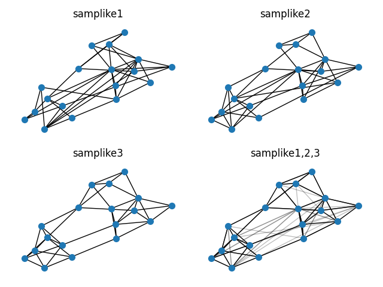

Note
Click here to download the full example code
Sampson#
Sampson’s monastery data.
Shows how to read data from a zip file and plot multiple frames.
The data file can be found at:
import zipfile
from io import BytesIO as StringIO
import matplotlib.pyplot as plt
import networkx as nx
with zipfile.ZipFile("sampson_data.zip") as zf:
e1 = StringIO(zf.read("samplike1.txt"))
e2 = StringIO(zf.read("samplike2.txt"))
e3 = StringIO(zf.read("samplike3.txt"))
G1 = nx.read_edgelist(e1, delimiter="\t")
G2 = nx.read_edgelist(e2, delimiter="\t")
G3 = nx.read_edgelist(e3, delimiter="\t")
pos = nx.spring_layout(G3, iterations=100, seed=173)
plt.clf()
plt.subplot(221)
plt.title("samplike1")
nx.draw(G1, pos, node_size=50, with_labels=False)
plt.subplot(222)
plt.title("samplike2")
nx.draw(G2, pos, node_size=50, with_labels=False)
plt.subplot(223)
plt.title("samplike3")
nx.draw(G3, pos, node_size=50, with_labels=False)
plt.subplot(224)
plt.title("samplike1,2,3")
nx.draw(G3, pos, edgelist=list(G3.edges()), node_size=50, with_labels=False)
nx.draw_networkx_edges(G1, pos, alpha=0.25)
nx.draw_networkx_edges(G2, pos, alpha=0.25)
plt.tight_layout()
plt.show()
Total running time of the script: ( 0 minutes 0.157 seconds)